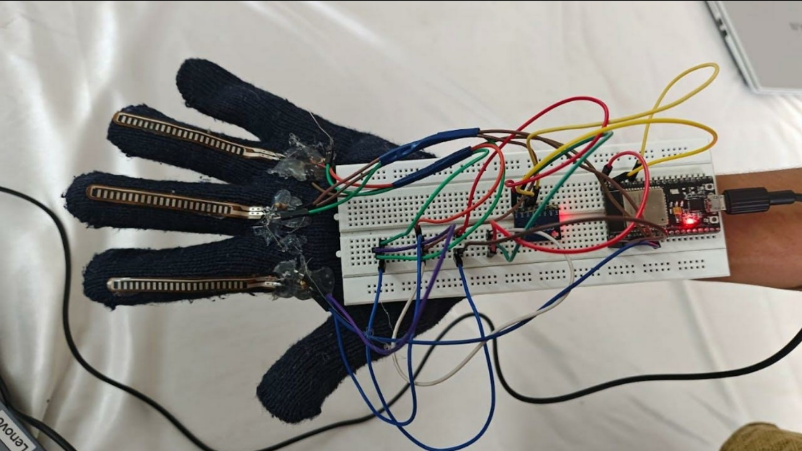

MARO Smart Sign Glove
قفاز ذكي للمساعدة في ترجمة إشارات اليد إلى نص وصوت
مرجع هندسي وتنفيذي للمكونات والبرمجة والتوصيلات والاختبار والتطوير
نموذج القفاز الفعلي

توزيع الحساسات والمتحكم
مخطط التوصيل
آلية العمل
ملاحظة علمية:
الإصدار الحالي يتعرف على إشارات ثابتة بعد تدريبها، ولا يمثل مترجما كاملا للغة الإشارة المصرية. يلزم اختبار ميداني وجمع بيانات موثقة قبل إعلان دقة النظام.